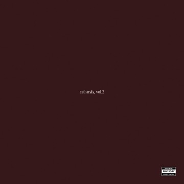

Merwane
Enregistrer le contact
Les projets
SNK Records
Label indépendant et studio
444
Streetwear premium
Kloud
La musique qu'on achète pour la garder
Doggo
L'application de la vie du chien, en préparation
Elevate X
Association pour les artistes émergents
La musique

Écouter Merwane
Tous les titres, toutes les plateformes